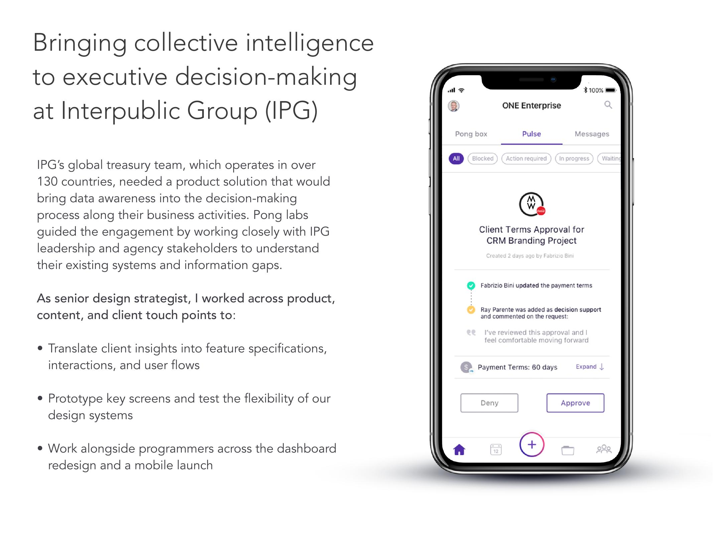
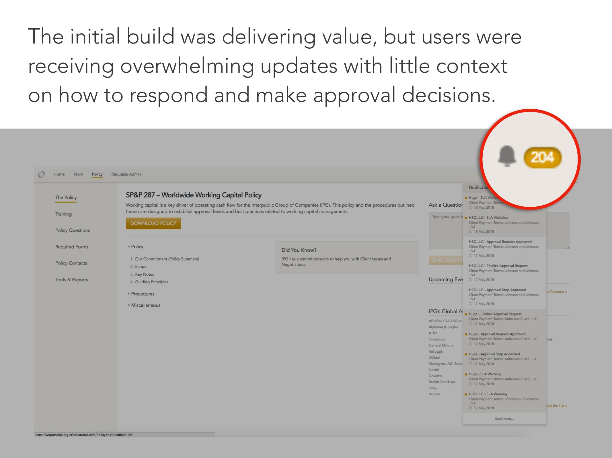
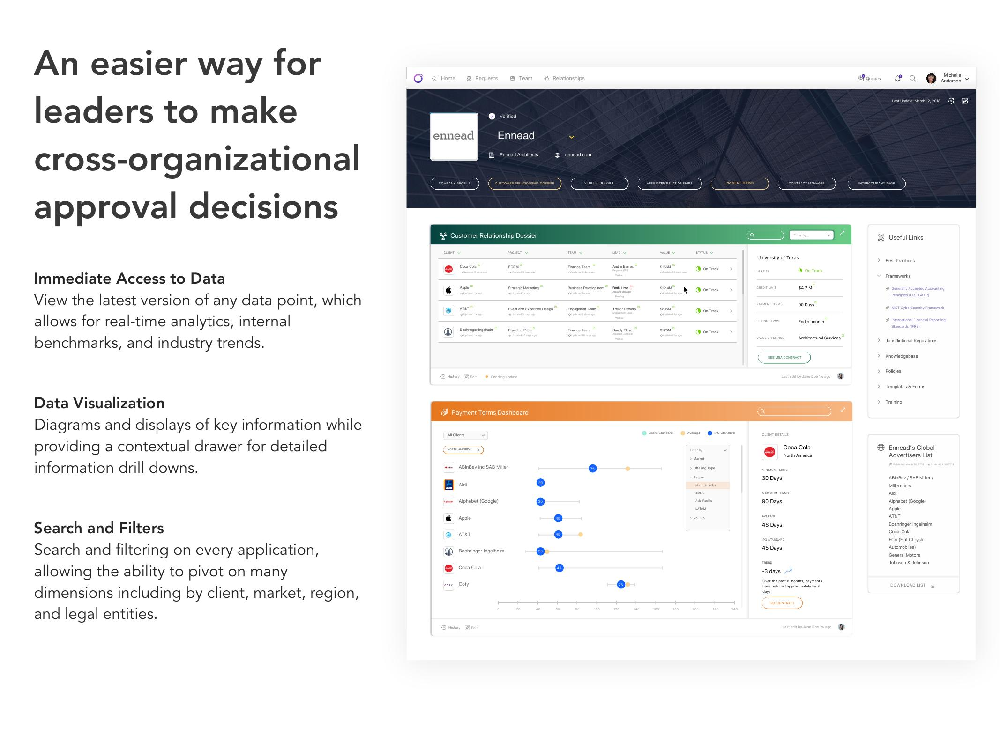
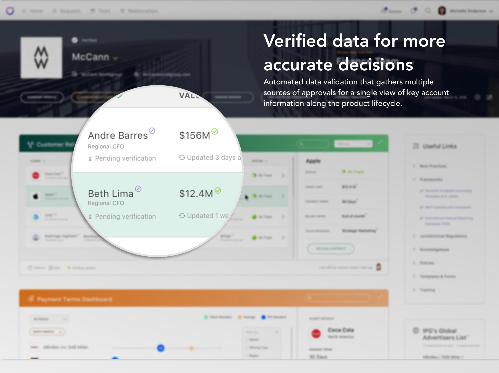
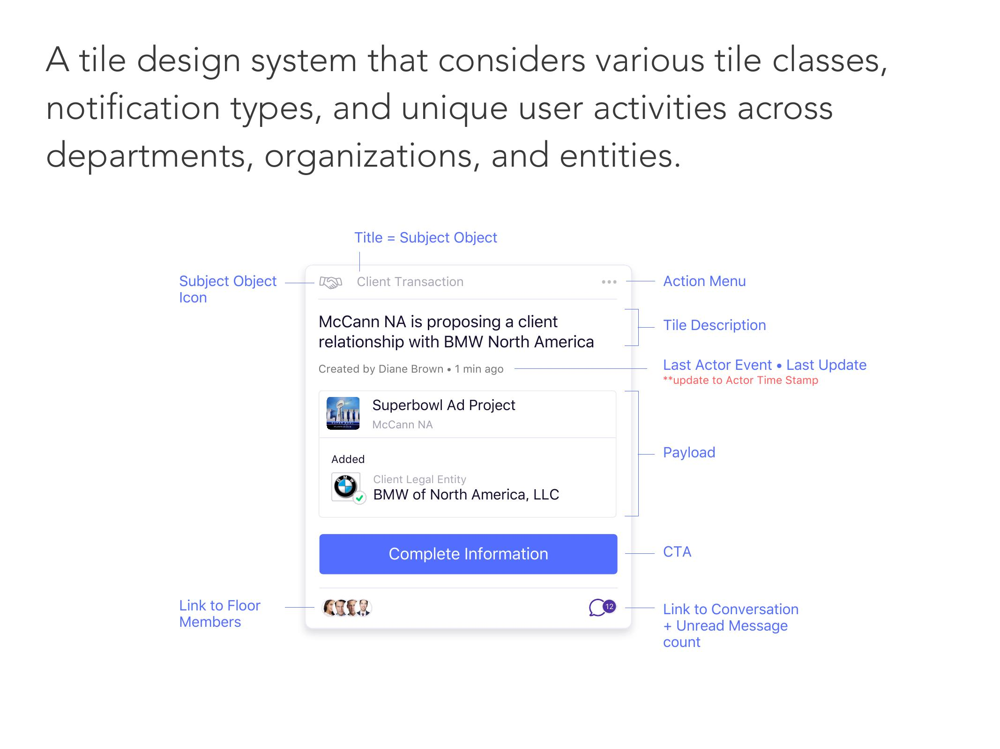
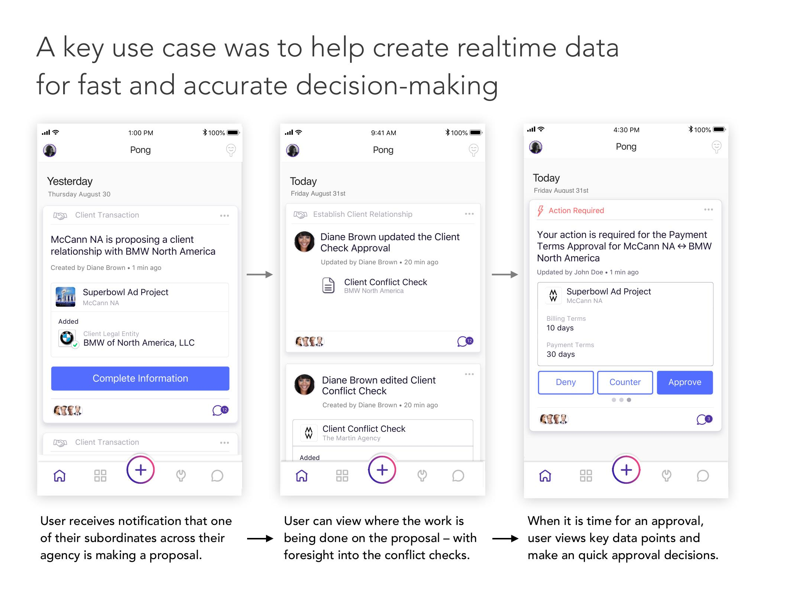

Bringing collective intelligence to executive decision-making at Interpublic Group
IPG's global treasury team, operating across 130 countries, needed a way to bring real-time data into cross-organizational decisions. I led the design strategy for a dashboard and mobile app that compressed weeks of approval cycles into hours.
- 72 hours approval time, down from weeks
- 82% adoption across 1,070 users
- 130 countries across 1,300 agencies

The Challenge
Cross-organizational approvals at IPG were taking weeks. CFOs across 1,300 agencies were making decisions with incomplete data, limited context, and hundreds of competing notifications. The cost of slow decisions at this scale (delayed contracts, missed opportunities, compliance risk) was compounding across the entire network.
As senior design strategist, I led the design workstream across product, content, and client touchpoints:
- Translated stakeholder interviews into feature specs, interaction patterns, and user flows
- Prototyped key screens and pressure-tested the design system's flexibility
- Partnered with engineering across the dashboard redesign and mobile app launch
Research Insights
I conducted stakeholder interviews across 15 client agencies worldwide. The pattern was consistent: leaders were drowning in notifications with no way to prioritize. At a holding company scale, every agency CFO is approving contracts, staffing changes, and vendor terms that roll up to enterprise risk—but the tools didn't reflect that. Hundreds of decisions, limited context, incomplete data, all compounding into organizational risk.
The initial build was delivering value, but users were overwhelmed. Using Jobs to Be Done analysis, I identified the core need: CFOs didn't want more data. They wanted faster, more confident decisions. Speed over volume became the design principle.

The Solution
I designed around one principle: compress the decision. A CFO shouldn't need to open three tabs, cross-reference a spreadsheet, and schedule a call to approve a contract. The information that matters should be visible at the moment of decision.
I structured the interface in layers, showing only what's needed at each step: summary at a glance, context on demand, full audit trail when needed. Every screen answered the same question: what do I need to know to decide right now?

Real-Time Data Layer
The old system showed stale data, sometimes days old by the time a CFO saw it. I designed a real-time data layer that surfaces the latest version of any data point alongside internal benchmarks and industry trends. The goal wasn't more data. It was current data, in context.
Visual Hierarchy
CFOs were scanning, not reading. I built a visual system that frontloaded the answer: status indicators, trend arrows, and color-coded risk signals that communicated state before a single number was processed. Detail lived in a contextual drawer, available on demand, hidden by default.
Flexible Filtering
No two CFOs slice their portfolio the same way. I designed a filtering system that let users pivot across client, market, region, and legal entity, any combination, any order. The interface needed to support 1,300 agencies with wildly different org structures without requiring custom builds.

Trust Through Verification
Speed means nothing if the data can't be trusted. I designed a verification layer that aggregates multiple approval sources into a single view, with clear provenance: who approved what, when, and through which system. The audit trail surfaced right at the point of decision.


Results
The redesigned approval process transformed how IPG's 1,300 agencies handle cross-organizational decisions.
- 72 hours approval time, down from weeks
- 82% adoption across 1,070 users
- 100% adoption among policy approvers
- 63 approvers across Network/Regional/BU CFOs
What I Learned
Enterprise products fail when they optimize for data completeness instead of decision speed. CFOs at this scale need the right information at the moment of decision. Relevance over volume. The tile system we built was about compressing weeks of context into a glance.
The deeper lesson was about adoption. 82% adoption across 1,070 users happened because we made their jobs faster. Speed is the feature.
Along Mentoring Tool
Designing a relationship-building tool that helps teachers and students connect through structured reflection prompts.
Chan Zuckerberg Initiative
Designing digital tools to help empower teachers, school leaders, and young people with data and educational experiences.
Mediation Response Unit
Designing a national toolkit to help communities respond to conflict with mediation instead of police.
XQ Institute
Architecting a national movement to rethink America's high schools. 26 million viewers, 2x supporter growth overnight.